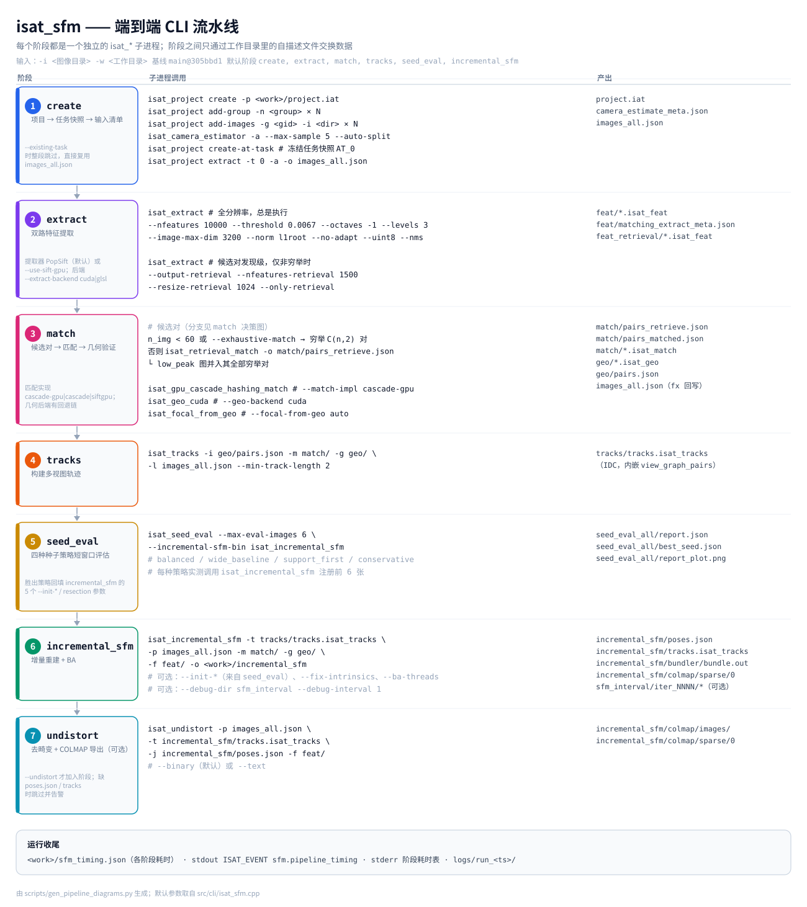

InsightAT
Simple Automated Aerial Triangulation
Fully automated aerial triangulation (AT = SfM) — drop in a photo folder, get sparse models, COLMAP export, and a desktop viewer. Built to be hands-off and foolproof.
Copyright 2026 Yang Hu
isat_* tools+ Electron SfM GUI / Viewer
GPU-accelerated pipeline
Overview
InsightAT (Aerial Triangulation) treats AT as
image-based SfM: an open-source toolkit for fully automated, foolproof
sparse reconstruction. One entry point (isat_sfm), or the Electron
SfM GUI for setup, progress, and the embedded SfM Viewer.
Outputs include incremental SfM tracks/poses, Bundler snapshots, and undistorted images with COLMAP sparse models (binary by default) for dense or 3DGS workflows.
Features
One-command SfM
isat_sfm -i images -w work runs create → extract → match → tracks → seed eval → incremental SfM → optional undistort.
Desktop GUI & Viewer
SfM GUI tails run logs and progress; View Reconstruction opens the COLMAP viewer (tracks + cameras).
COLMAP handoff
Export PINHOLE sparse models as .bin (default) or .txt, with undistorted images for downstream MVS / 3DGS.
Production packaging
AppImage / deb for CLI; separate Electron packages for GUI and standalone Viewer.
Pipeline
Typical isat_sfm flow (GUI rebuild mirrors the same stages):

isat_sfm CLI flow — stages, subprocesses and artifacts.
See the
English technical status
or
简体中文技术现状
for the match-stage decision tree and the incremental SfM loop.
Quick Start
Requirements
- Ubuntu 22.04 or Windows
- CUDA 12.8 for GPU-accelerated extract / match (GLSL fallback available)
- Image folder (subfolders OK; different cameras better in separate folders)
Build (Linux)
git clone https://github.com/huluoboge/InsightAT.git
cd InsightAT
./packaging/linux/build.sh
# binaries: ./build/isat_*Run SfM
isat_sfm -i /data/images -w /data/work
# optional: undistorted images + COLMAP sparse (.bin by default)
isat_sfm -i /data/images -w /data/work --undistortKey arguments
| Argument | Description |
|---|---|
-i | Input image directory |
-w | Work directory for intermediates and results |
--undistort | Export undistorted images + COLMAP sparse |
--binary / --text | COLMAP format (binary is default with undistort) |
--steps | Subset of pipeline steps to run |
Full packaging (AppImage, deb, Docker, Windows): see packaging/README.md.
Download
Grab the latest artifacts from GitHub Releases (CLI AppImage/deb, Windows zip, and Electron GUI / Viewer packages when published).
Technical Report & Status
The software technical report explains why InsightAT exists, how its
CLI-first pipeline is organized, which strategies make the default path
automatic, and where the current implementation ends. A separate
technical status document records the code-level details and real defaults
as of main @ 305bbd1 (2026-09-28).
Citation
If you use InsightAT in research or production work, please cite:
@software{hu2026insightat,
author = {Hu, Yang},
title = {InsightAT: Simple Automated Aerial Triangulation},
year = {2026},
doi = {10.5281/zenodo.20042104},
url = {https://github.com/huluoboge/InsightAT}
}